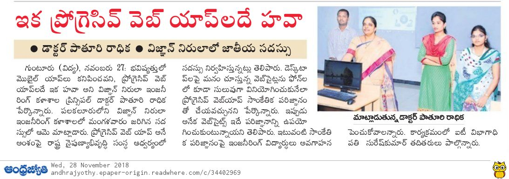

InduPriya-Profile
Home
PWA and MIT

2017 - 2019 Working in PWA and MIT workshops
PWA-Design Progressive Application Throuh HTML5,CSS3,Javascript and Json
MIT-Develop Different types of Apps using blocks